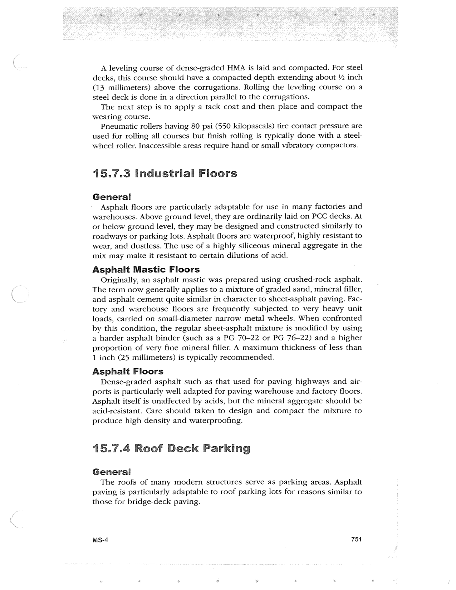

PDF page 785 · book page sequence 751


Searchable transcription
Unproofread OCR · 358 detected words; mean OCR confidence 95.71. Check technical values, symbols and table columns against the scan.
A leveling course of dense-graded HMA is laid and compacted. For steel decks, this course should have a compacted depth extending about 2 inch (13 millimeters) above the corrugations. Rolling the leveling course on a steel deck is done in a direction parallel to the corrugations.
The next step is to apply a tack coat and then place and compact the wearing course.
Pneumatic rollers having 80 psi (550 kilopascals) tire contact pressure are used for rolling all courses but finish rolling is typically done with a steel- wheel roller. Inaccessible areas require hand or small vibratory compactors.
15.7.3 Industrial Floors
General
Asphalt floors are particularly adaptable for use in many factories and warehouses. Above ground level, they are ordinarily laid on PCC decks. At or below ground level, they may be designed and constructed similarly to roadways or parking lots. Asphalt floors are waterproof, highly resistant to wear, and dustless. The use of a highly siliceous mineral aggregate in the mix may make it resistant to certain dilutions of acid.
Asphalt Mastic Floors
Originally, an asphalt mastic was prepared using crushed-rock asphalt. The term now generally applies to a mixture of graded sand, mineral filler, and asphalt cement quite similar in character to sheet-asphalt paving. Fac- tory and warehouse floors are frequently subjected to very heavy unit loads, carried on small-diameter narrow metal wheels. When confronted by this condition, the regular sheet-asphalt mixture is modified by using a harder asphalt binder (such as a PG 70-22 or PG 76-22) and a higher proportion of very fine mineral filler. A maximum thickness of less than 1 inch (25 millimeters) is typically recommended.
Asphalt Floors
Dense-graded asphalt such as that used for paving highways and air- ports is particularly well adapted for paving warehouse and factory floors. Asphalt itself is unaffected by acids, but the mineral aggregate should be acid-resistant. Care should taken to design and compact the mixture to produce high density and waterproofing.
15.7.4 Roof Deck Parking
General
The roofs of many modern structures serve as parking areas. Asphalt paving is particularly adaptable to roof parking lots for reasons similar to those for bridge-deck paving.
MSs-4 751